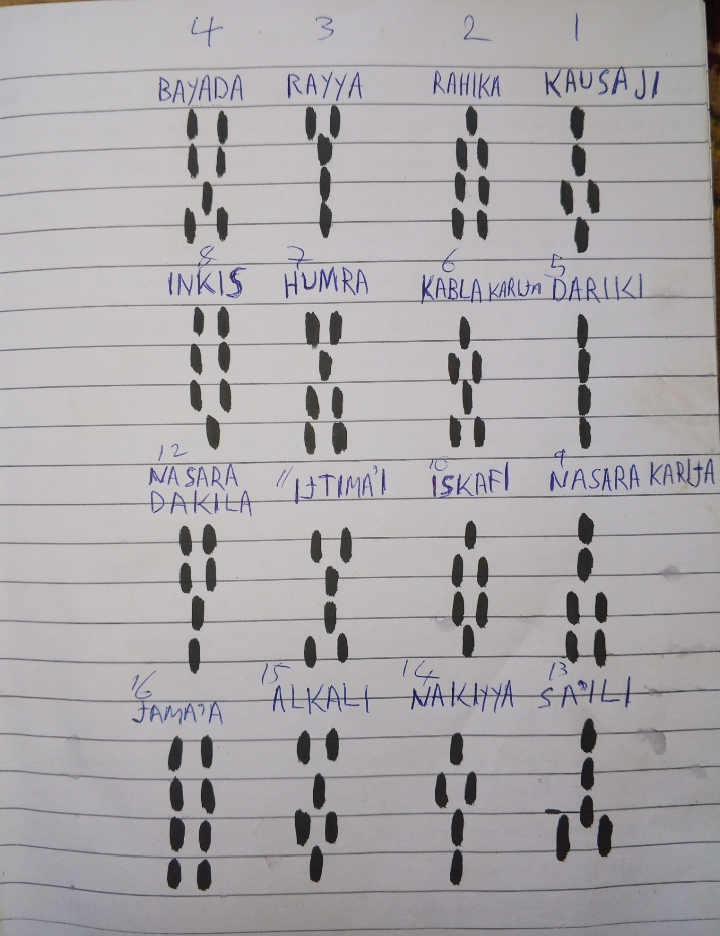

Sashin Kwararru (VIP)
Ka sani a ilimin Ramli, wannan shi ne matakin farko, kuma daga shi babu wani mataki a bayansa. Da farko dole sai ka san abubuwa guda uku (3) a wannan ilimin:
Da farko, ga sunayensu a jere a kasa daki-daki:
| Gida | Suna (Hausa) | Larabci |
|---|---|---|
| 1 | KAUSAJI | كوسجي |
| 2 | RAHIKA | ضاحكا |
| 3 | RAYYA | رية |
| 4 | BAYADA | بياض |
| 5 | DARIKI | طريقي |
| 6 | KABLA KARIJA | قبل خارجا |
| 7 | HUMRA | حمرا |
| 8 | INKIS | انکيس |
| 9 | NASARA KARIJA | نصر خارجا |
| 10 | ISKAFI | اسقاف |
| 11 | IJTIMA'I | اجتماعي |
| 12 | NASARA DAKILA | نصر داخلا |
| 13 | SA'ILI | سائلي |
| 14 | NAKIYYA | نقي |
| 15 | ALKALI (KALI DAKILI) | القالي |
| 16 | JAMA'A | جماعة |
Wadannan sune taurarin Ramli. Sannan ga hotonsu yadda suke taurari. Tauraro na farko yana da dugo: Daya, Daya, Biyu, Daya (1, 1, 2, 1).
Tauraro na gidan biyu (Rahika) yana da dugo: Daya, Biyu, Biyu, Biyu (1, 2, 2, 2).
A haka har a zo tauraro na gidan sha shida (Jama'a) yana da dugo: Biyu, Biyu, Biyu, Biyu (2, 2, 2, 2).
Hoton Tsarin Dugo-Dugon Taurari

To kamar yadda na fada, dole ka san abubuwa guda uku akan su:
Dole ka san sunan kowanne:
Misali, idan an nuna maka tauraro kawai ka ce wannan tauraro kaza ne.
Dole ka san gidajensu:
Misali, idan an nuna maka tauraron RAYYA, dole ka ce wannan tauraron gidan uku ne.
Dole ka san dugo-dugonsu:
Misali, idan an ce meye dugo-dugon tauraron NASARA KARIJA, kawai ka ce daya, daya, biyu, biyu.
Domin ka kara fahimtar wannan karatun yadda ya kamata ba tare da wani sarkakiya ba, ga cikakken bidiyo na matakin farko wanda Malamin Zaure ya yi bayani filla-filla. Kalla a nan kasa:
To idan ka rike wadannan abubuwa ukun ka gama da matakin farko. Sannan ka sani, shi wannan ilimin yana bukatar hadda! Dole sai ka haddace duk wani mataki a cikin matakan da muka kawo. Akalla a ce ka haddace matakai 12.
Karshen Mataki Na Daya
Tabbatar ka haddace kafin ka shiga mataki na biyu!
وَاللَّهُ أَعْلَمُ